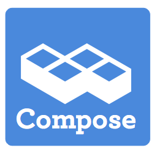

How we do it : Good deeds recognised
How often have you accomplished something at work, raised your head from the desk and found you are in an empty office and no one will ever know the epic challenge you took on? Awful isn’t it. No champagne, no boss coming in to shake your hand and… wait, that doesn’t happen anyway but the effect is amplified when you work remotely. There’s that moment when you go for a high five from the cat and, after failing to get that and bandaging your clawed hand, having to make do with a fresh cup of coffee rather than champagne.
Sitting here with my fresh cup of coffee in my bandaged hand, I can tell you that remote working would be so much better with some way of getting feedback for those little things. Well, now we have that in-house at Compose…
One of our internal systems at Compose is called Fizz. We’ve been running it for a while and traditionally Fizz has been about creating and reporting progress towards milestones. It’s a fabulously fluid system which allows us to go from idea to team to completion quickly and without drama (unless we’re organising the Compose Annual Play, in which case there’s lots of drama). While Fizz was great for the bigger jobs, it didn’t handle the smaller tasks…
While we were becoming Compose, Fizz got an overhaul and one thing that was added was a whole new system of Deeds. When anyone goes to Fizz they are presented with a text field and list of the latest deeds. Done something that you think is worthy of getting a little congratulation? Enter it into the text field and hit the Humblebrag! button and it’ll get added to the list of deeds.
If you haven’t got a deed done, then you can browse down the list and hand out your daily allocation of two thumbs up to anyone else’s deed that you appreciate. Better still, if the deed engages your interest, you can leave a comment on it so you can ask “How did you achieve this epic feat” or some more specific query if the mood takes you. Those humblebrags, votes and comments are echoed into the company chat system, so people don’t have to visit the Fizz system to find out whats going on, and when they want to respond
Fizz Deeds are a simple system to tackle a simple problem, but like the stapler and the staple remover, the most useful office tools are pretty simple but effective. We’re already seeing better recognition of the smaller un-milestoned work and it offers an easy on-ramp to Fizz’s team building and tracking platform.
The lessons learned? Look to recognise the small achievements during the working day. And don’t try and high five a cat. But mostly it’s the recognising small achievements thing, because thats how we do it at Compose.